Zebra Shift guide · 14 pictures
Bedside ultrasound signs
Ultrasound shows fluid as black (anechoic), stones and bone as bright with a dark shadow behind them, and solid organs as grey speckle. Almost every sign below is one of those three ideas.
The probe marker and labels sit at the top of each scan, and the depth scale in centimetres runs down the right-hand side.
Abdominal aortic aneurysm with mural thrombus

A round aorta measuring 7.5 cm from outer wall to outer wall (normal is under 3 cm), lined with grey thrombus. In a shocked patient with back pain, assume rupture and call the vascular surgeons.
Often confused with: Normal aorta · Retroperitoneal lymph nodes · Dilated inferior vena cava
In the game: Ruptured Abdominal Aortic Aneurysm
Gallstones with a thick wall and fluid around the gallbladder: acute cholecystitis
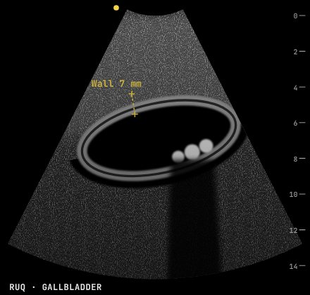
Bright stones with dark acoustic shadows, a gallbladder wall thicker than 3 mm and a rim of fluid around it. With a sonographic Murphy sign this is acute cholecystitis.
Often confused with: Gallstones with a normal wall: biliary colic · Gallbladder polyp · Normal gallbladder
In the game: Acute Cholecystitis
Gallstones with a normal, thin wall: biliary colic
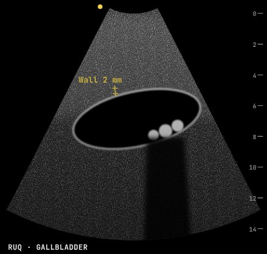
Bright, mobile stones casting dark shadows, but the wall is thin and there is no fluid around it: stones without inflammation.
Often confused with: Acute cholecystitis · Gallbladder polyp · Normal gallbladder
In the game: Biliary Colic
Empty uterus with free fluid in the pelvis: ruptured ectopic until proven otherwise
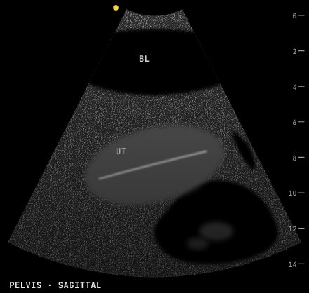
No gestational sac in the uterus, only a thin bright endometrial line, and black free fluid with grey clot behind it. With a positive pregnancy test this is a ruptured ectopic.
Often confused with: Early intrauterine pregnancy · Normal pelvis · Ovarian cyst
In the game: Ruptured Ectopic Pregnancy
Target sign: intussusception
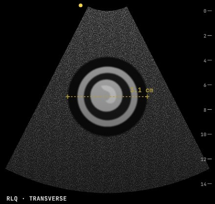
Rings within rings, about 3 cm across: bowel telescoped into bowel, with a crescent of trapped mesenteric fat. In a toddler with colicky pain this is intussusception.
Often confused with: Normal bowel loop · Appendicitis · Lymph node
In the game: Intussusception
Thick, long pyloric muscle: hypertrophic pyloric stenosis
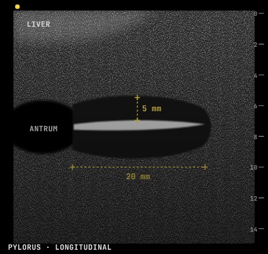
Pyloric muscle 5 mm thick (over 3 mm is abnormal) and channel 20 mm long (over 15 mm is abnormal), with stomach contents stuck behind it.
Often confused with: Normal pylorus · Duodenal atresia · Gastric outlet tumour
In the game: Hypertrophic Pyloric Stenosis
"Snowstorm" uterus with no fetus: complete hydatidiform mole
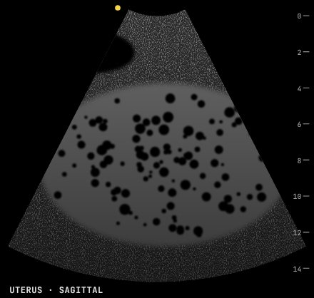
An enlarged uterus filled with echogenic tissue riddled with tiny cysts and no fetus. With a very high hCG this is a complete molar pregnancy.
Often confused with: Missed miscarriage · Twin pregnancy · Uterine fibroids
In the game: Hydatidiform Mole
Free fluid around the spleen: a positive FAST
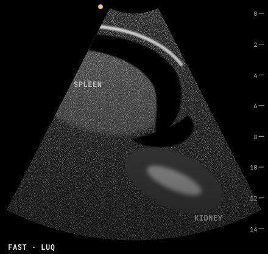
Black fluid between the spleen and kidney and above the spleen. After trauma, free fluid means blood until proven otherwise; an unstable patient goes to theatre.
Often confused with: Normal left upper quadrant · Pleural effusion only · Kidney stone
In the game: Splenic Rupture, Penetrating Abdominal Trauma
Vein does not compress and has echoes inside: deep vein thrombosis
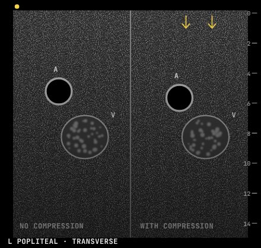
Pressing with the probe should flatten a normal vein completely. This one stays round and is full of grey echoes, while the artery beside it is unchanged: a popliteal DVT.
Often confused with: Normal compressible vein · Baker's cyst · Arterial aneurysm
In the game: Deep Vein Thrombosis
Barcode (stratosphere) sign: no lung sliding, pneumothorax
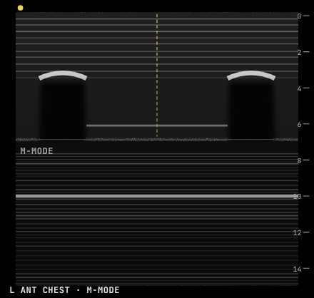
On M-mode, normal lung below the pleural line looks grainy like sand (the seashore). Here everything is flat horizontal lines, top to bottom: no sliding, so air separates the pleura.
Often confused with: Seashore sign: normal lung sliding · B-lines: interstitial fluid · Pleural effusion
In the game: Tension Pneumothorax
No colour flow in an enlarged left testis: testicular torsion
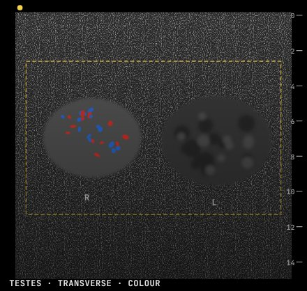
Colour Doppler shows flow in the right testis but none in the swollen, slightly patchy left one. Do not wait for imaging if you suspect torsion: the clock is ticking.
Often confused with: Epididymo-orchitis · Normal testes · Hydrocele
In the game: Testicular Torsion
Dark halo around the temporal artery: giant cell arteritis
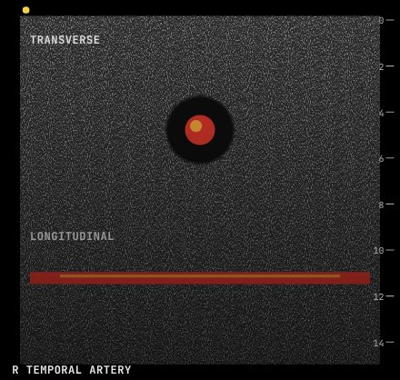
A dark, even ring of swollen wall around the artery in both views. It does not compress away. With jaw pain and a high ESR this is giant cell arteritis: start steroids now.
Often confused with: Normal temporal artery · Temporal artery aneurysm · Atherosclerotic plaque
In the game: Giant Cell Arteritis
Large pericardial effusion with right ventricular collapse: tamponade
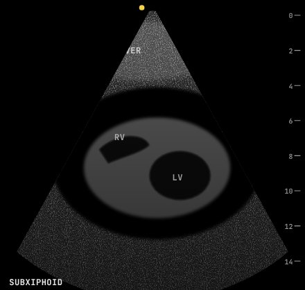
A wide black rim of fluid all around the heart, and the right ventricle is squashed flat in diastole. In a shocked patient this needs drainage now.
Often confused with: Pleural effusion · Dilated cardiomyopathy · Normal heart
In the game: Cardiac Tamponade
Single large dark lesion in the liver: liver abscess
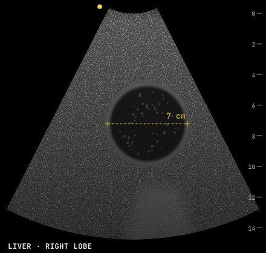
A round, dark lesion with low-level echoes inside, a thick wall and brighter tissue behind it. With fever and right upper quadrant pain after travel, think amoebic liver abscess.
Often confused with: Simple liver cyst · Haemangioma · Normal liver
In the game: Amoebic Liver Abscess